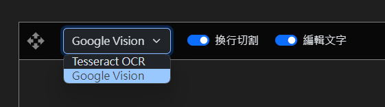

When to use
Game UI and dialogue options are not automatically translated; you need to manually select and capture them. Using the more accurate Google Vision is recommended.How to use
Click the button or press Ctrl+F11 to open the [Translate Screen Text] window, then select the text you want to translate within the capture window (as
shown in the video below).
button or press Ctrl+F11 to open the [Translate Screen Text] window, then select the text you want to translate within the capture window (as
shown in the video below).
Function Description

- The drop-down menu in the top-left corner allows you to select the capture method.
- Line Break Splitting: When checked, it translates line-by-line (useful for translating dialogue options during cutscenes). If unchecked, it will merge all text into a single line before translating (use this when translating entire paragraphs).
- Edit Text: When checked, an edit window will appear after capturing the text, allowing you to manually correct the text before clicking [Translate] to submit. If unchecked, the text will be submitted for translation immediately without the option to correct errors.
Capture Methods
-
Google Vision (Recommended)
Highly accurate text recognition with almost no typos. Requires setting up an API credential in GCP. ( View setup tutorial ) -
GPT Vision
Performance is comparable to Google Vision; if you are already using GPT for translation, you can use this directly. -
Tesseract OCR
May occasionally produce typos; manual editing and correction may be required.